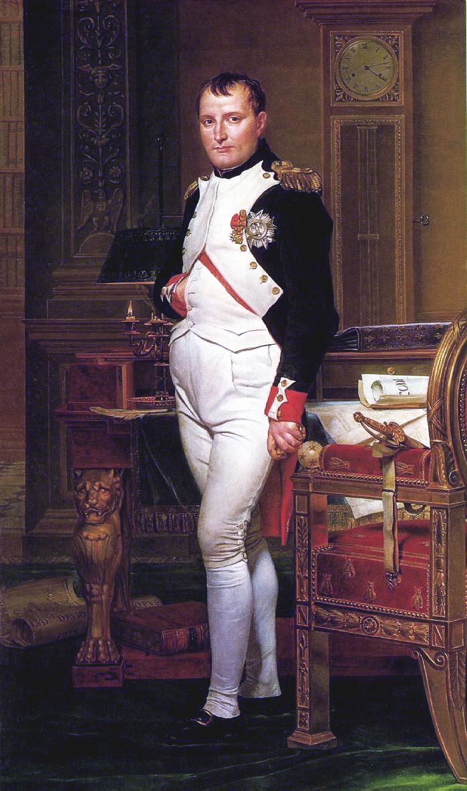

A HISTÓRIA DE NAPOLEÃO
Da Revolução ao Império: o homem que fez a Europa tremer.
Napoleão Bonaparte foi um dos personagens mais importantes da história europeia. Nascido em 1769, na ilha da Córsega, tornou-se oficial do Exército francês e ganhou destaque durante a Revolução Francesa, iniciada em 1789. A revolução derrubou a monarquia e transformou profundamente a sociedade francesa, criando oportunidades para militares talentosos como Napoleão.
Em 1799, aproveitando a instabilidade política da França, Napoleão liderou um golpe de Estado que encerrou o governo do Diretório e estabeleceu o Consulado, no qual assumiu a posição de primeiro-cônsul. Durante seu governo, promoveu reformas administrativas, reorganizou o sistema educacional e fortaleceu o Estado. Uma de suas principais realizações foi o Código Napoleônico, promulgado em 1804, que consolidou princípios como a igualdade perante a lei e a proteção da propriedade privada, embora também reforçasse a autoridade masculina dentro da família.
Em 1804, Napoleão coroou a si mesmo imperador dos franceses, iniciando uma fase de expansão militar. Seus exércitos conquistaram territórios e derrotaram diversas coalizões de potências europeias, incluindo Áustria e Prússia. No auge de seu poder, Napoleão controlava diretamente ou influenciava grande parte da Europa continental. Entretanto, suas guerras provocaram milhões de mortes, aumentaram a resistência dos povos dominados e mantiveram o continente em constante conflito.
Uma das maiores dificuldades de seu governo foi a resistência britânica. Para enfraquecer o Reino Unido economicamente, Napoleão instituiu o Bloqueio Continental, que proibia os países europeus de comercializar com os britânicos. A medida prejudicou economias locais e foi amplamente descumprida. Em 1808, a intervenção francesa na Espanha desencadeou uma guerra prolongada, marcada pela resistência popular e pelo apoio britânico aos espanhóis.
Em 1812, Napoleão invadiu a Rússia para obrigar o czar Alexandre I a respeitar o bloqueio econômico. A campanha terminou em desastre: os russos recuaram, destruíram recursos que poderiam abastecer os invasores e evitaram uma batalha decisiva até que o avanço francês se tornasse insustentável. O frio, a fome, as doenças e os ataques russos destruíram grande parte do exército napoleônico durante a retirada.
Após essa derrota, várias potências europeias se uniram contra a França. Em 1813, Napoleão foi derrotado na Batalha de Leipzig e, no ano seguinte, os exércitos inimigos invadiram a França. Em 1814, ele abdicou e foi enviado para a ilha de Elba. Contudo, em 1815, escapou e retornou ao poder por um breve período conhecido como os Cem Dias.
Seu retorno terminou na Batalha de Waterloo, em junho de 1815, quando as forças britânicas e prussianas derrotaram definitivamente seu exército. Napoleão abdicou novamente e foi exilado na distante ilha de Santa Helena, no Atlântico Sul, onde morreu em 1821, aos 51 anos.
O legado de Napoleão permanece controverso. Ele ajudou a consolidar transformações jurídicas e administrativas decorrentes da Revolução Francesa, influenciando sistemas legais de diversos países. Ao mesmo tempo, estabeleceu um regime autoritário, restringiu liberdades políticas, restaurou a escravidão nas colônias francesas em 1802 e conduziu guerras que devastaram a Europa. Sua trajetória representa tanto a difusão de reformas modernas quanto os perigos da concentração de poder e da ambição imperial.